Christopher Nolan · 2014
INTERSTELLAR
Insoniyatning so'nggi umidi — yulduzlar orasida
"Do not go gentle into that good night,
Old age should burn and rave at close of day;
Rage, rage against the dying of the light."
Christopher Nolan · 2014
Insoniyatning so'nggi umidi — yulduzlar orasida
"Do not go gentle into that good night,
Old age should burn and rave at close of day;
Rage, rage against the dying of the light."
21-asr oxiri. Sayyoramiz o'layapti. Chang bo'ronlari ekinzorlarni vayron qiladi, oziq-ovqat tanqisligi insoniyatni qirib bormoqda. Nasaning sobiq uchuvchisi Cooper o'z fermasi va farzandlari bilan umid yo'qolgan dunyoda yashaydi.
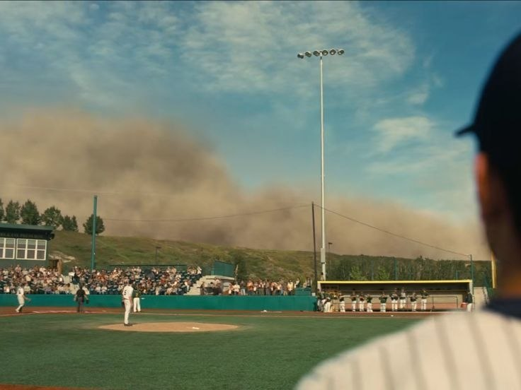
"Biz qishloqchilar bo'lib qoldik — insoniyatning oxirgi avlodi." — Cooper
Bug'doy, sholi, makkajo'xori ketma-ket nobud bo'lmoqda
Atmosfera cho'kishi bilan nafas olish qiyinlashmoqda
Otaning sevgisi va qizining dahosi — insoniyat umidi
Gravitatsion anomaliya Cooperni yashirin NASA bazasiga olib keladi. Professor Brand u yerda ulkan sirni ochib beradi: insoniyatni qutqarish uchun yulduzlararo ekspeditsiya kerak. Cooper bu missiyaning kaliti.
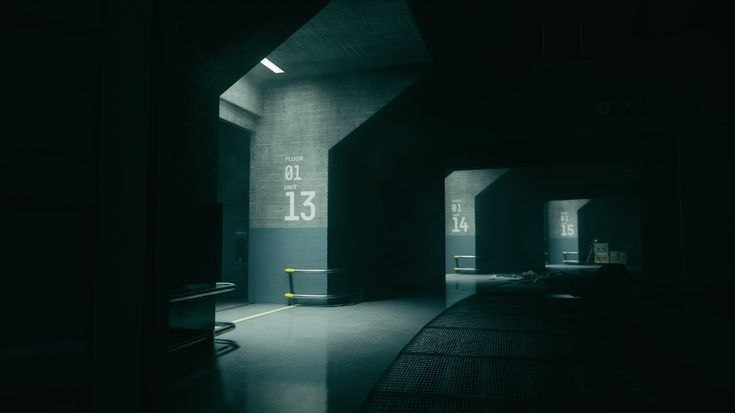
"Insoniyat Yerning beshigi — ammo bir kun beshikni tark etish kerak." — Professor Brand
Endurance kemasi Saturn orbitasiga yo'l oladi. Cooper farzandlarini tark etib, insoniyatni qutqarish uchun yulduzlarga uchadi. Murphning ko'z yoshlari va otaning og'ir yuki...
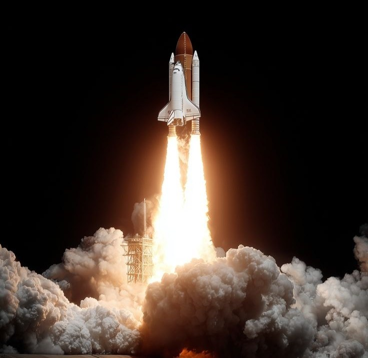
"Murph, biz har doim erta tug'ilgan odamlarmiz. Vaqti kelib yetib olamiz." — Cooper
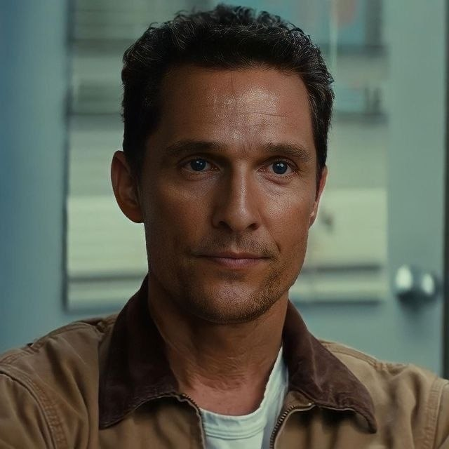
Pilot va missiya rahbari
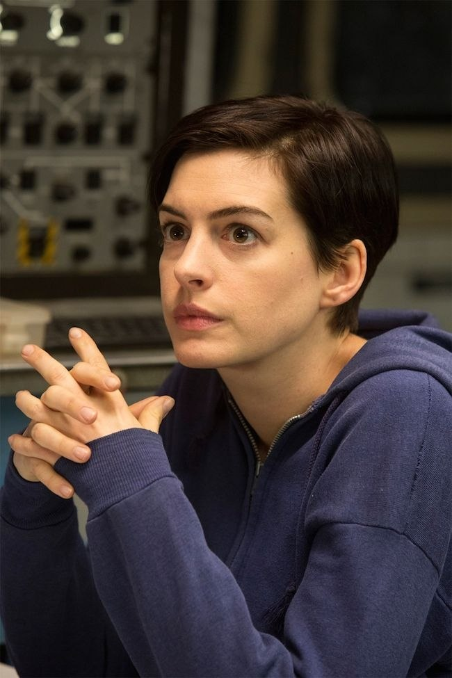
Olim va razvedkachilar qizi
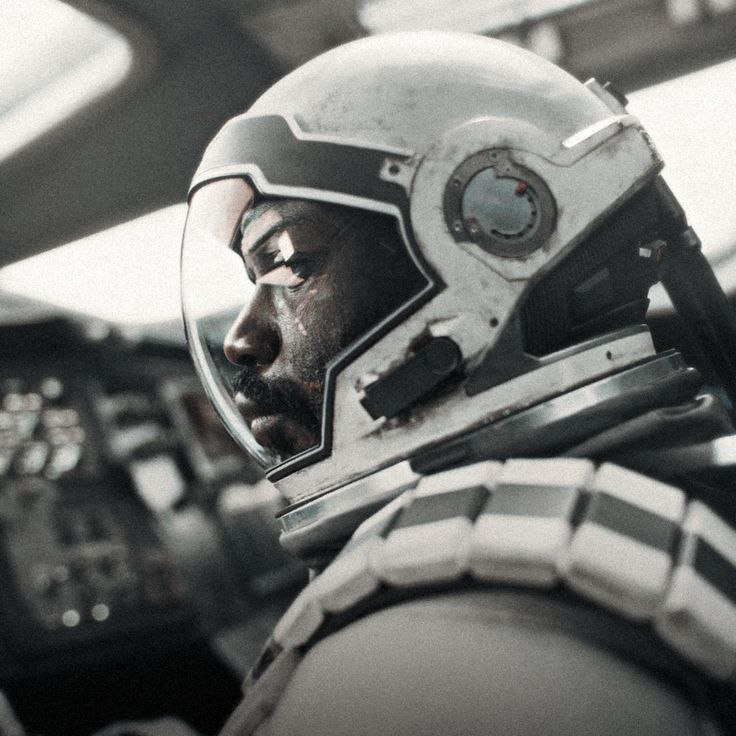
Fizika va qurtdesha mutaxassisi
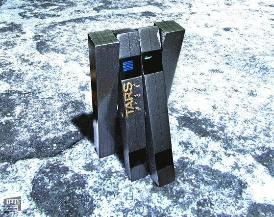
Robot — hazil darajasi 75%
Saturn yonida sirli bir ob'ekt paydo bo'lgan — qurtdesha. Uch o'lchovli qurtdesha orqali boshqa galaktikaga o'tish mumkin. "Ular" kimlar bu yo'lni qurib qo'ygan?
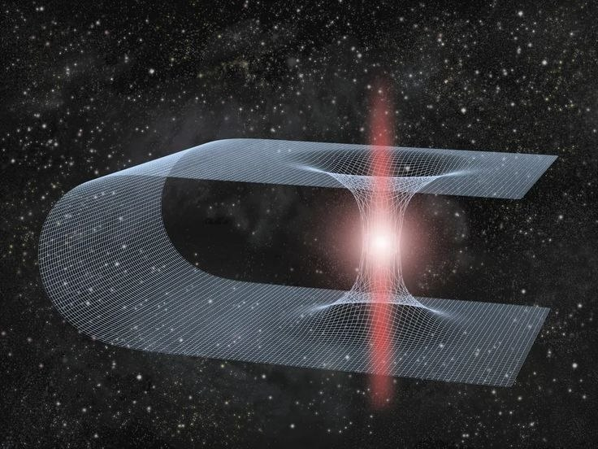
"Qurtdesha uch o'lchovli, ya'ni shar shaklida — kimdir uni bizga hadya etdi." — Romilly
Kip Thorne (Nobel laureati, 2017) qurtdesha fizikasini to'liq ilmiy asosda loyihaladi. Gargantua — ilmiy nuqtai nazardan o'sha paytgacha yaratilgan eng aniq qora tuynuk tasviridir.
Gargantua qora tuynugi yaqinidagi suv sayyorasi. Gravitatsion kengayish sababli har bir soat Yerdagi 7 yilga teng. Ulkan to'lqinlar... va dahshatli haqiqat.
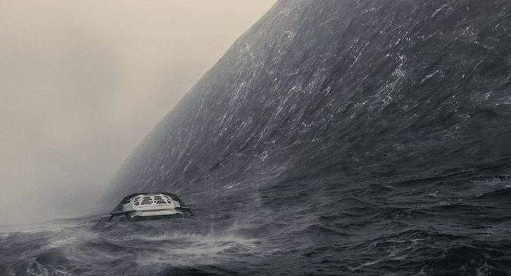
Gravitatsion vaqt kengayishi — Einstein nazariyasi amalda
"Biz yerga qaytganimizda Murph 35 yoshda bo'ladi." — Brand
Supermassiv qora tuynuk — Gargantua. Ufq atrofida nur egrilanib to'liq halqa hosil qiladi. Uning yoniga borish — vaqt va makonning o'zini anglashdir.
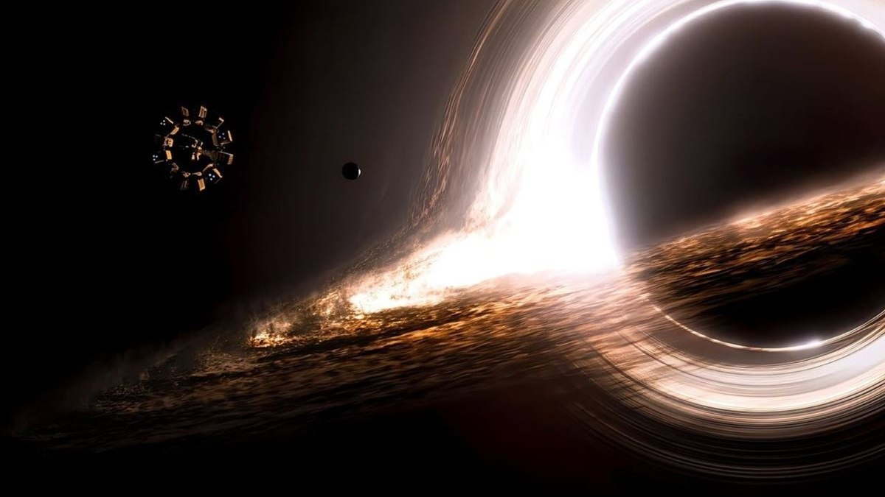
Fizika qonunlari buzilgan nuqta — cheksiz zichlik
Orqaga qaytib bo'lmaydigan chegara — yorug'lik ham qochib chiqolmaydi
Yorug'lik egrilanib qora tuynuk atrofida halqa hosil qiladi
Muz qoplagan Mann sayyorasi. Dr. Mann omon qolgan — lekin u xiyonat qildi. Yolg'on ma'lumotlar yubordi, chunki yolg'izligi uni sindirdi. Eng dahshatli xavf — odamning o'zi.
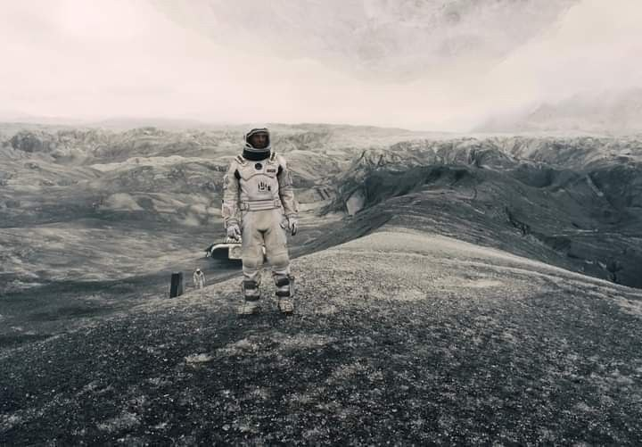
"Tabiat insonni tirik qolish uchun har narsaga qodir qiladi — hatto yolg'on gapirish uchun ham." — Dr. Mann
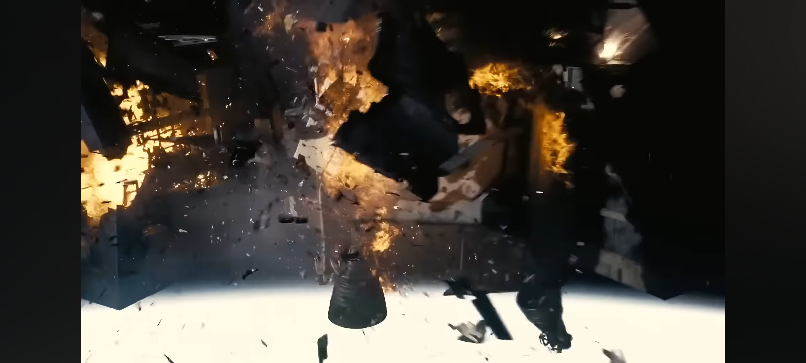
Cooper Gargantua ichiga tushadi. U yo'q bo'lmaydi — u tessarakt ichida. 5-o'lchovli fazoda vaqt makon sifatida ko'rinadi. Cooper Murphning xonasini turli vaqtlarda ko'radi.
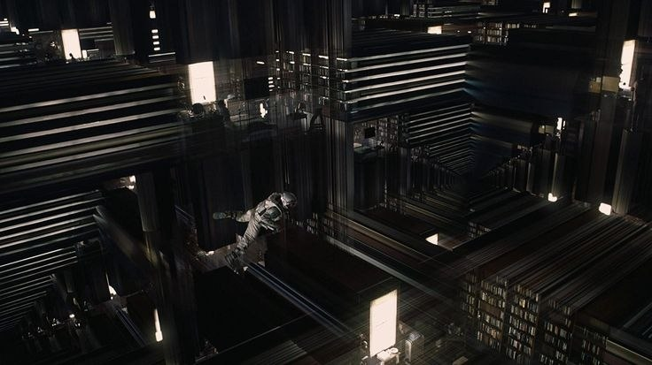
"LOVE, Cooper. Sevgi — vaqt va makondan tashqaridagi yagona kuch." — Brand
Murph 10 yoshda — kutubxonada "avliyolar"
Murph ketishiga qarshi chiqadi
Murph formulani yechmoqda — Cooper signali!
Murphy Cooper o'sdi — u buyuk olima bo'ldi. Otasining yuborgan gravitatsion ma'lumotlari soatda yashiringan edi. Formulani yechdi: insoniyat Yerni tark etishga tayyor.
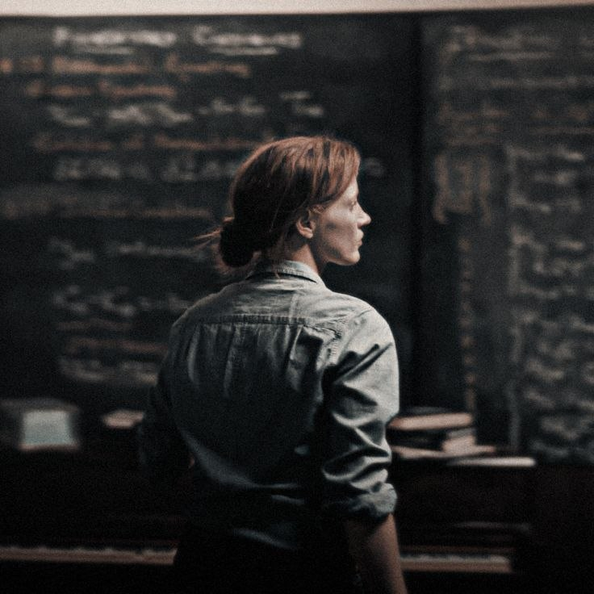
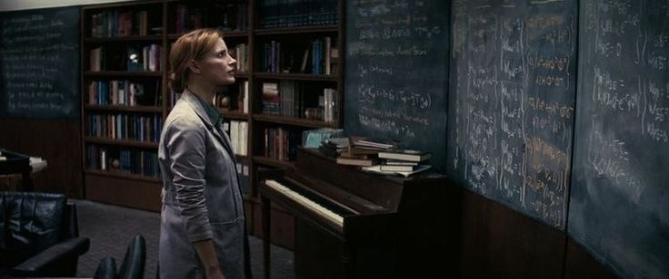
Umumiy nisbiylik tenglamasi — Murph hal qilgan formula
"Murphy's law: yuz berishi mumkin bo'lgan narsa — albatta yuz beradi." — Cooper
Tessarakt yo'qoladi. Cooper Saturn yonida topiladi. "Ular" — kelajakdagi insonlar — 5-o'lchovli kosmosni qurishgan. Ular Cooper orqali insoniyatni qutqardilar. Sevgi — kosmik kuch.
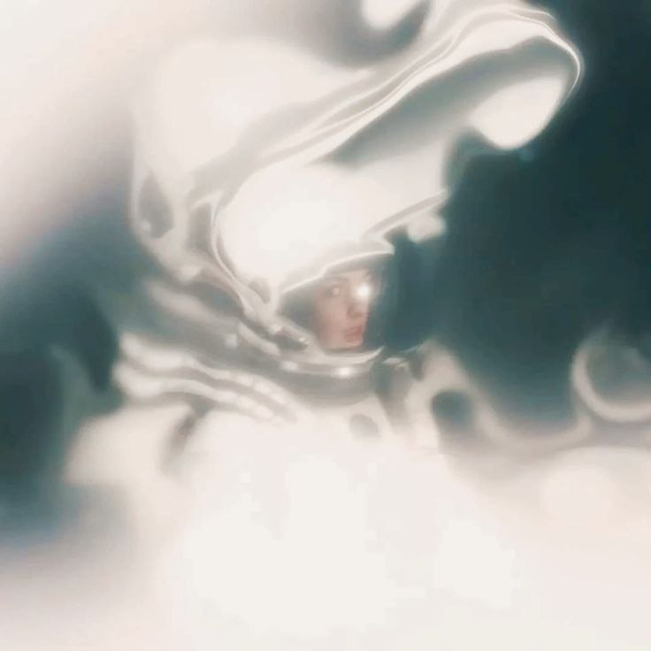
Kelajakdagi insoniyat — 5-o'lchovli mavjudotlar
Muhabbat — vaqt va makonni engib o'tuvchi yagona kuch
Insoniyat o'zini o'zi qutqardi — davra yopildi
Cooper uyg'onadi. Insoniyat Yerni tark etgan — ulkan kosmik stantsiyalarda yashaydi. U Murphni ko'radi — qari, g'olib. Keyin Cooper yana yo'lga chiqadi — Amelia Brand sayyorasiga.
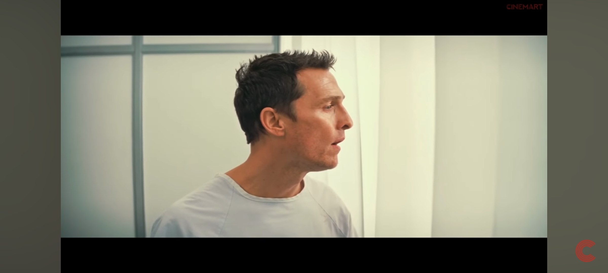
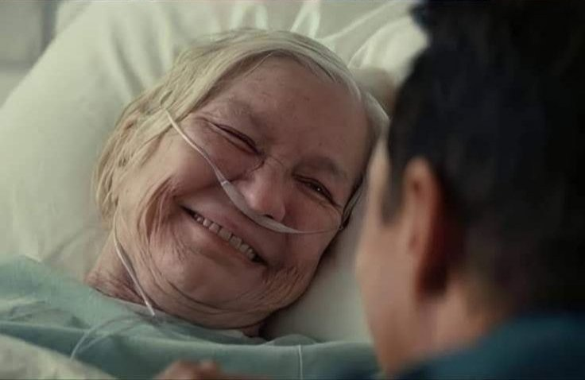
"Biz yulduzlardan keldik — endi yulduzlarga qaytamiz."